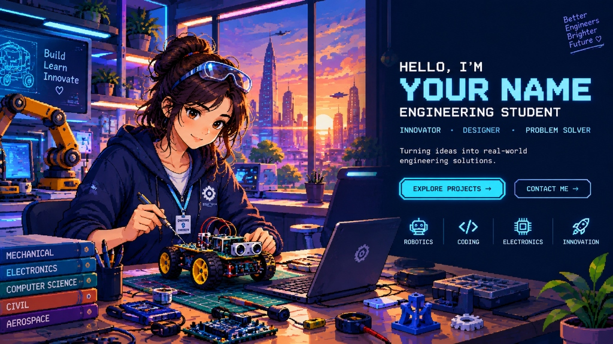
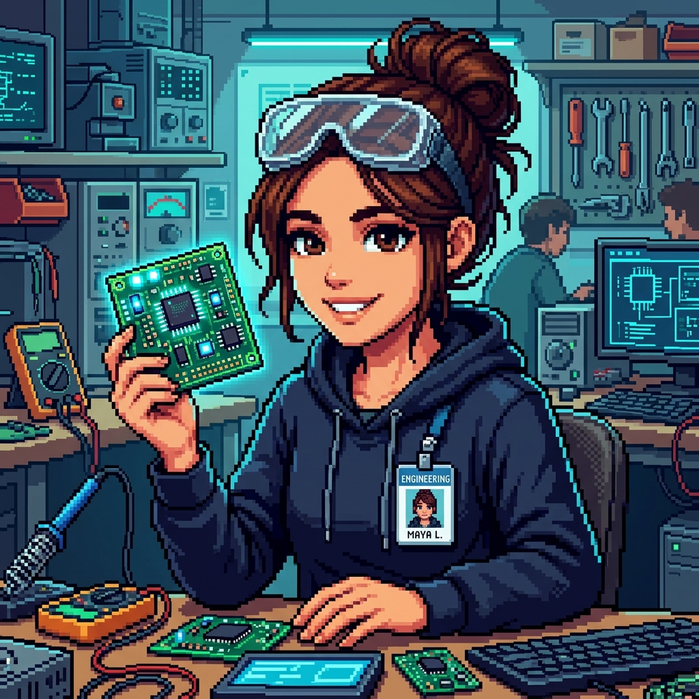
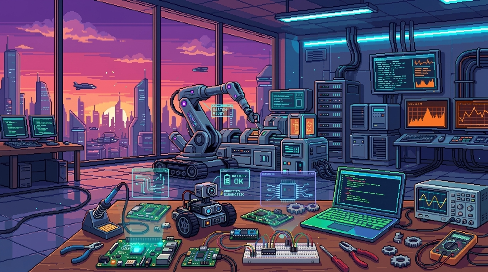
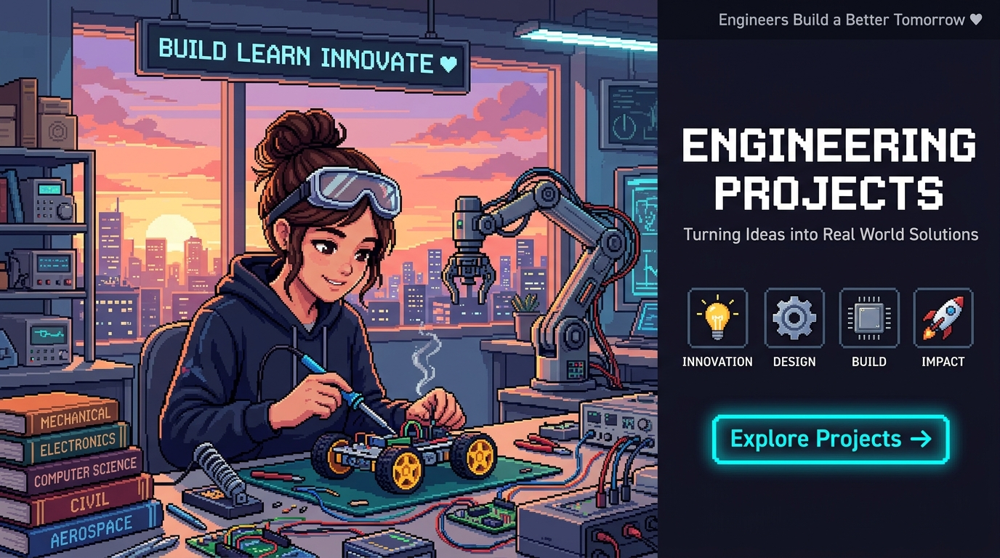
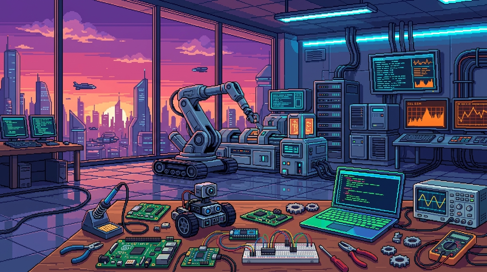
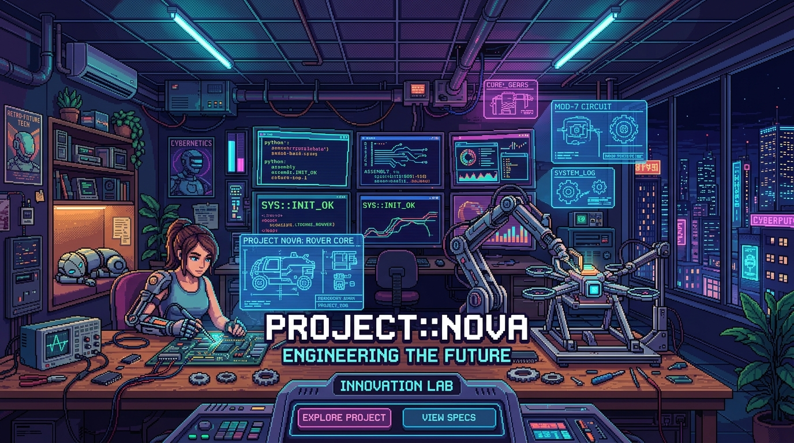

LEAD DEVELOPER
Maya S. • CSE & Robotics
ROVER NOVA v2.4
ROS2 • LiDAR • SlamNav
NEO-METROPOLIS LAB
Sunset Innovation Hub
HELLO WORLD // I AM
MAYA SHARMA
SOFTWARE ENGINEER & ROBOTICS SPECIALIST
“Architecting resilient software, intelligent robotics algorithms, and full-stack telemetry systems that bridge virtual code with physical reality.”
SELECT LAB VIEWPORT:
[ SECTION 01 ]
ABOUT ME // IDENTITY & VISION
Bridging high-performance software engineering with real-world embedded robotics.

ENG::MAYA-882
DISCIPLINE:
Computer Science & Robotics
PRIMARY FOCUS:
Autonomous Nav & Distributed Systems
LOCATION:
Bangalore / Hybrid & Global
CURRENT STATUS:
● Open for Engineering Roles & Labs
ENGINEERING WITH PURPOSE & RIGOR
I am a software engineer and robotics developer driven by the thrill of turning mathematical theory and clean architecture into tangible autonomous machines. My work spans the full stack: from writing low-latency real-time control algorithms in C++ and Python on microcontrollers, to architecting cloud-connected telemetry interfaces with modern JavaScript and WebSockets.
When I am not tuning sensor fusion matrices or debugging logic analyzer traces at the workbench, you can find me contributing to open-source robotics tools, mentoring hackathon teams, and building retro-style interactive web experiments.
🤖 Autonomous Mobile Robots
⚡ Real-Time Embedded Systems
👁️ Computer Vision & OpenCV
🌐 Distributed Full-Stack Systems
🔧 Rapid Hardware Prototyping
18+
PROJECTS COMPLETED
Hardware & Cloud Apps
15+
TECH STACK TOOLS
Languages & Frameworks
6+
HACKATHONS WON
National & Collegiate
99.8%
SYSTEM UPTIME
Field Tested Robots
[ SECTION 02 ]
TECHNICAL SKILLS // PROFICIENCY & ARSENAL
Core competencies across high-level software engineering, embedded systems, and robotics frameworks.
ROBOTICS & AI
AUTONOMY & SENSOR FUSIONEMBEDDED HARDWARE
CIRCUITS & MICROCONTROLLERSWEB & CLOUD
TELEMETRY & FULL STACK
[ SECTION 03 ]
CAREER TIMELINE // MILESTONES & EXP
Sequential log of academic achievements, major engineering prototypes, and leadership roles.
2026
FLAGSHIP MILESTONE
Project Nova: Autonomous Rover v2.4 Deployment
Autonomous Systems Research LabSpearheaded the complete software & hardware architecture of an autonomous exploration rover. Integrated ROS2 Humble with onboard 2D LiDAR SLAM, dual stereo camera vision, and custom motor controllers, achieving autonomous waypoint navigation in unstructured terrains.
2025
HACKATHON WINNER
1st Place • Smart Systems National Hackathon
National Institute of TechnologyEngineered BenchSync: a real-time IoT workbench telemetry station within 36 hours. Connected ambient temperature, hazardous solder fume sensors, and power consumption meters to a live WebSockets dashboard for automated laboratory hazard alerts.
2024
INTERNSHIP
Robotics Software Engineering Intern
AeroRobotics DynamicsDeveloped computer vision inspection pipelines for quality assurance on industrial automation lines using OpenCV and Python. Optimized image acquisition latency by 42% through multithreaded frame buffering and hardware triggers.
2023
ACADEMIC EXCELLENCE
B.Tech in Computer Science & Engineering (Robotics Minor)
Department of CSE • Honors StudentEnrolled with academic scholarship. Founded the collegiate Robotics & Open-Source Software Guild, coordinating workshops on Arduino firmware, Linux kernel basics, and version control for over 150 student members.
[ SECTION 04 ]
FEATURED PROJECTS // HARDWARE & CODE
Click any project thumbnail or button to inspect detailed schematics, architecture, and telemetry data.

AUTONOMOUS MOBILE ROBOT2026 // FLAGSHIP
Project Nova: Autonomous Rover
Four-wheel differential-drive autonomous exploration robot with onboard LiDAR SLAM, ROS2 Humble navigation stack, and computer vision obstacle tracking.
ROS2
LiDAR
Python
ESP32

MECHATRONICS & KINEMATICS2025 // HARDWARE
6-DOF Precision Robotic Manipulator
Desktop robotic arm utilizing closed-loop stepper motors, 3D-printed harmonic drives, and real-time inverse kinematics calculations on an STM32 MCU.
C++
STM32
Inverse Kinematics
Fusion 360

FULL-STACK IOT2025 // IOT CLOUD
BenchSync: Smart Lab Station
Connected electronics laboratory management hub streaming fume toxicity, temperature, and power metrics to a real-time reactive WebSockets dashboard.
WebSockets
Node.js
ESP32
Chart.js

TELEMETRY & UI2026 // CYBERPUNK UI
HoloVision Telemetry Terminal
High-performance WebGL & Canvas dashboard rendering real-time 3D LiDAR point clouds and live robot health telemetry in a retro cyberpunk HUD interface.
WebGL
Three.js
MQTT
TypeScript
[ SECTION 05 ]
DEMO HIGHLIGHT // FIELD TEST & DEMO
Watch an introductory demonstration of autonomous robotics telemetry and algorithms in action.
CRT_CHANNEL_01 // ROVER_SLAM_TELEMETRY.MP4
1080p HD // 60FPS
SIGNAL: LOCKED • 100% QUALITY
VIDEO BRIEF
Field Demonstration: Autonomous LiDAR SLAM & Kinematics Control
This highlight reel showcases the real-time sensor fusion and SLAM navigation routines running on Rover Nova v2.4. Watch how 2D LiDAR point clouds are processed in ROS2 to avoid dynamic obstacles in unstructured laboratory conditions.
[ SECTION 06 ]
LAB ARCHIVE // 16-BIT VISUAL ASSETS
Interactive pixel-art gallery of engineering workspaces and project blueprints.
RENDER 01
Student Engineer at Sunset Workbench
Inspect Fullscreen ↗
RENDER 02
Maya Sharma with Glowing Microcontroller
Inspect Fullscreen ↗
RENDER 03
Holographic Diagnostics & Rover Bay
Inspect Fullscreen ↗
RENDER 04
Solder Station, Rover & City Sunset
Inspect Fullscreen ↗
[ SECTION 07 ]
TESTIMONIALS // PEERS & MENTORS
Endorsements from research directors, hackathon mentors, and engineering collaborators.
“
Maya demonstrates an extraordinary blend of algorithmic discipline and physical hardware intuition. Her work on Rover Nova's LiDAR SLAM localization pipeline demonstrated maturity and reliability rarely seen at the collegiate level.
“
During the Smart Systems Hackathon, Maya led our team from idea to a working prototype in under 36 hours. Her clean full-stack code and calmness under tight deadlines was the definitive factor that secured our first place win!
“
Maya's ability to document complex embedded architectures and write clean, modular C++ code makes her an invaluable pair programmer. Any robotics or software engineering team would be fortunate to have her.
[ SECTION 08 ]
AI CHAT INTERFACE // TALK TO MAYA-BOT
Interact with an AI assistant trained on Maya's engineering background, projects, and technical skills.
ONLINE // READY TO TRANSMIT
QUICK PROMPTS:
[ SECTION 09 ]
CONTACT ME // INQUIRIES & COLLAB
Have a project, research question, or engineering opportunity? Transmit a direct message below.
LET’S BUILD SOMETHING EXTRAORDINARY
Whether you are looking for an autonomous systems software engineer, want to discuss robotics research, or invite me to a hackathon, my inbox is always open.
OFFICIAL EMAIL
maya.sharma.eng@university.edu
RESEARCH HUB
Dept. of Computer Science & Robotics Lab
RESPONSE TIME
Replies typically within 24 hours
ENCRYPTED TELEMETRY LINK
CHANNEL::SECURE_TLS_1.3